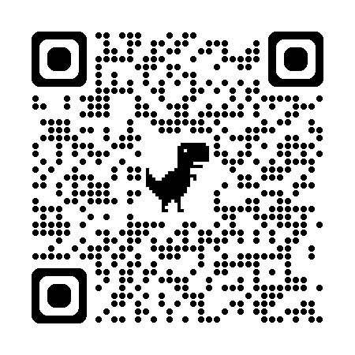

AI活用の本当の壁は「学ぶこと」ではなく、使い続け、組織に根付かせることです。 Tatami Worksでは、月額プラン（継続サポート）を中心に、 コース・スポット相談を組み合わせて、あなたの業務にAIを定着させます。 本資料では、それぞれのプランで何ができるようになるかを具体的にまとめました。
「継続サポート（月額プラン）」を中心に、スキル習得（コース）・単発相談（スポット）の3つの入口をご用意しています。
どこから始めても、組み合わせてもOKです。順番はありません。
最も成果につながるのは、継続的に伴走する月額プラン。コース・スポットは独立してご利用いただくこともできます。
すべてのプラン（スポット相談・コース・月額プラン）で、以下のいずれかからお選びいただけます。 ① オンライン（Zoom／Google Meet等）／ ② 対面（Tatami Works／千歳船橋）追加料金なし／ ③ 御社訪問追加の出張費にて対応可。
AI活用は「身につけて終わり」ではありません。週単位でモデルが変わり、業務との接点も増え続けます。 だからこそ継続的に伴走するパートナーがいる方が、成果は段違いに大きくなります。
新モデル・新機能・新しい使い方は週単位で出ます。月額プランなら、最新動向を毎週キャッチアップしながら、 あなたの業務に効くものだけを選んで導入できます。
単発で学んでも、現場で困った瞬間にすぐ相談できる相手がいないと続きません。 月額プランは「困った時、明日聞ける」の安心感が成果を生みます。
AI活用は1人で完結しません。チームへの展開、社内ルール作り、ナレッジ共有まで、 組織にAIを根付かせる過程を一緒に設計します。
自動化、カスタムアシスタント、新規事業──AI活用の幅は広がり続けます。 毎月の壁打ち相手がいることで、挑戦の打席数が圧倒的に増えます。
ご利用人数・課題感に応じて3段階。最低3ヶ月からのご契約となります（途中でのプラン変更可）。
MTGはオンライン／対面（Tatami Works）／御社訪問（出張費別途）からお選びいただけます。
※ コースの受講は必須ではありません。いきなり月額プランからのスタートも歓迎です。基礎から伴走する形で進めます。
個人事業主、フリーランス、コース修了後に習慣化したい方。少人数の小規模事業者。
本気で業務オペレーションを変えたい経営者・部門責任者。10〜50名規模の企業で多くお選びいただきます。
AIを経営の中核に据えたい企業、新規事業立ち上げを検討中の方、全社規模での変革を進めたい経営者。
月額プランは「ただの定例MTG」ではありません。標準カリキュラムの目的別コースとは違い、あなたの業務に合わせてフルカスタマイズするのが最大の特徴です。
決まったカリキュラムはありません。御社の業務・課題・組織状況に合わせて、毎月のテーマを完全オーダーメイドで設計します。ここが目的別コースとの最大の違いです。
MTGの合間、現場で困った瞬間にチャットで相談可能。「今日試したい」に応えます。
新モデル・新機能・新ツールの情報を、あなたの業務に紐づけて毎月共有します。
実際にどう使われるか、3つの典型ケースをご紹介します。あなたの状況に近いものはありますか？
毎週金曜の60分MTGで「今週やること」を整理。提案書のたたき台・市場リサーチ・SNS投稿の量産をAIに任せる仕組みを順次構築。
週10時間の業務時間圧縮。新規案件への着手スピードが2倍に。
週2回のMTGで、営業・マーケ・バックオフィス各部門のAI化を並行で推進。社内勉強会の設計・自社専用アシスタントの構築まで伴走。
営業オペレーション自動化でCV30%改善。社内にAI推進担当が育つ。
週3回MTG＋月1対面で、経営会議への同席・新規事業のPoC・社内ナレッジのRAG化まで並走。投資判断・採用設計にもAIを組込む。
新規事業1本がローンチ。AI推進専門チームを社内に新設。
※ 上記は典型的な活用パターンを示したイメージケースです。
ご相談前によく聞かれることをまとめました。その他のご質問は無料相談でお気軽にどうぞ。
月額プランの前段階として、または並行して、体系的にスキルを身につけたい方向けの10回コース。
週1回60分 × 全10回（約2.5ヶ月）の完全マンツーマン。4つのコースから、ご自身の役割と目的に合うものをお選びいただけます。
カリキュラムは標準化されており、確実に基礎力を身につけることを目的としています。
御社業務へのフルカスタマイズ伴走をご希望の場合は、月額プラン（継続サポート）をご検討ください。
プログラミング未経験からでも、Claude Codeを使って業務の自動化と簡易アプリ開発ができるようになるコース。 セミナーでお見せしたデモ（リサーチ自動化／Instagram運用／Excel処理）を、ご自身の業務に置き換えて再現できる状態を目指します。
ChatGPT／Claudeを「便利ツール」から「自分の業務の相棒」に育てるコース。 メール、議事録、資料作成、データ整理、リサーチなど、日々の業務の処理速度を数倍にするワークフローを身につけます。
SNS投稿画像、チラシ、バナー、商品写真、プレゼン資料をAIでプロ品質に量産するコース。 「外注しないと作れなかった販促物を、自分のお店・事業の手で回し続けられる」状態を目指します。
経営者・マネージャーが、意思決定の質とスピードをAIで底上げするコース。 市場調査、財務・顧客データ分析、事業計画作成、社内ナレッジのAI化まで、経営全体にAIを組み込みます。
「いきなりコースや月額は重い、まず1回だけ試したい」という方向けの単発相談。 60分で具体的なアウトプットをお持ち帰りいただけます。
オンライン／対面（Tatami Works）／御社訪問（出張費別途）から選択可
タイプ別の目安です。実際にはあなたの状況をうかがった上で、最適な組み合わせをご提案します。
「組織にAIを定着させたい」「日々の業務を一緒に改善したい」という方。最もおすすめ。コース未受講でも、いきなりスタートOK。
→ 月額プラン（¥100,000〜／月）
「2〜3ヶ月で本格的にAI活用スキルを身につけたい」という方。修了後は月額プランへ。
→ 目的別コース（¥150,000／全10回）
「AIで本当に自分の業務が変わるのか、まずは確かめたい」という方の入口。
→ スポット相談（¥20,000／60分）
30分のオンライン相談で、あなたの業務にどのプランが合うか一緒に整理します。
押し売りは一切しません。「話す場」として、お気軽にご利用ください。
